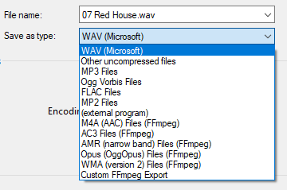
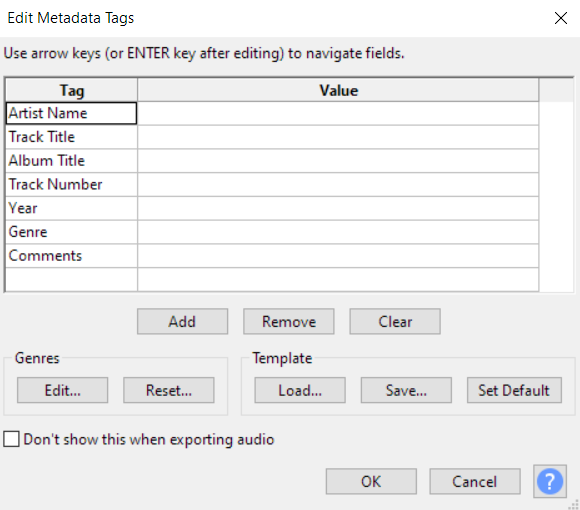

Exporting Audio
To export audio:
- Click File Export and then Export Audio.
- Select the file location where you would like to export your audio file.
- Enter a name for your audio file in the File Name field.
- Select an export format from the Save as type dropdown menu.
 - Click Save. The Edit Metadata Tags dialog box appears.
 - Enter values for the following fields: Artist Name, Track Title, Album Title, Track Number, Year, Genre, Comments.
- Click OK.
Note: Any muted tracks at the time of export will not be
converted.